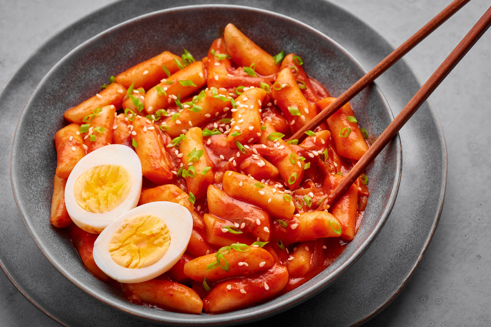

Tteokbokki Recipe
Home

Description
Tteokbokki is a Korean Bunsik favourite, salty, spicy and slightly sweet this snack will leave you desperate for more!
Ingredients
- 250g garaetteok
- 1-1½ tbsp gochujang
- 2 tsp gochugaru
- 1-1½ tbsp soy sauce
- 1¾-2 cups water
- 2-3 pcs eomuk
- 1-2 tsp sugar
- 1 tbsp corn syrup
- 1 clove garlic
- 1 stalk spring onion
- ½ tbsp olive oil
- 1 hard-boiled egg
Steps
- Soak rice cakes in a bowl of cold water for about 20 mins if using rice cakes stored in the fridge or freezer. If using fresh rice cakes, there is need to soak. Pull rice cakes apart into individual pieces is they are stuck before cooking.
- Fill saucepan with water and gochujang. Bring this to a boil. Put in the fish cakes and onions and simmer for about 5 mins. Alternatively, to lessen the spiciness, reduce gochujang and substitute with some tomato sauce for colour.
- Add the rice cakes, garlic, gochugaru (chilli flakes), soy sauce, sugar and corn syrup and cook until the rice cake are soft, this should take about 5 mins.
- Drizzle in some olive oil before serving.
- Tteokbokki can be served with hard-boiled eggs, cooked instant ramen or even fried mandu (Korean dumplings).